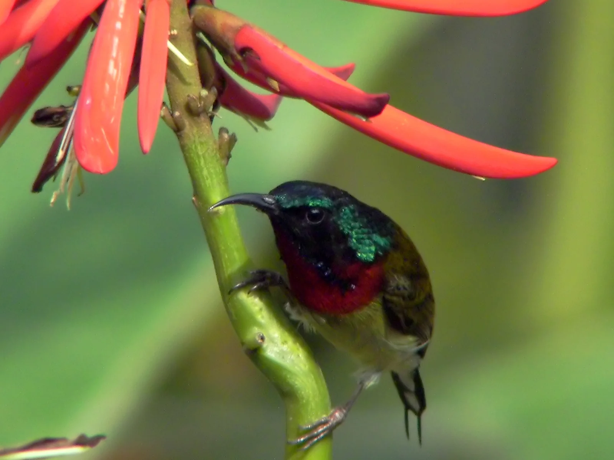

Back to the indexNO. 049 · Songbirds & City Birds / Nectariniidae · Sunbirds
Fork-tailed Sunbird
叉尾太阳鸟 · chā wěi tài yáng niǎo Aethopyga christinaeSouth China's smallest 'hummingbird', tail like a pair of scissors
China has no hummingbirds, but it does have sunbirds — equally tiny, equally given to hovering at flowers, equally metallic. The male Fork-tailed Sunbird is barely 8 cm long, with an emerald crown, a scarlet throat and two long central tail feathers that splay like scissors.
Gallery
One scientific illustration for shape and colour blocks, two field photographs for how it looks in real light. Click any image to enlarge.
Identification
- MaleCrown and upper back metallic emerald, throat and upper breast scarlet, lower breast orange-yellow, belly yellow-green; the two central tail feathers extremely fine and long, forked at the tip.
- FemaleUpperparts olive-green, underparts yellow-green, no red throat patch, tail shorter and unforked — altogether much plainer.
- BillFine, long and distinctly downcurved, nearly as long as the head — a purpose-built nectar tool.
- TongueTubular and forked at the tip, drawing nectar up by capillary action — a textbook case of convergent evolution with the hummingbirds.
Behaviour
Hovers at flowers to drink, and takes small insects among the blooms for protein. Lively, alone or in pairs, strongly territorial, the male chasing off other sunbirds. It favours tubular flowers — kapok, coral tree, hibiscus, lantana. It builds a pear-shaped hanging nest woven from spider silk and plant fibre, suspended beneath leaves.
Voice
A high, faint 'tsit—tsit—tsit' or 'see-see', easily drowned by background noise; the song is a rapid series of metallic high notes.
Where to find it in Zhuhai
- Yeli Island kapok blossom
- Xiangshan Lake Park flower beds
- Banzhang Hill forest edges
- SYSU campus flowering trees